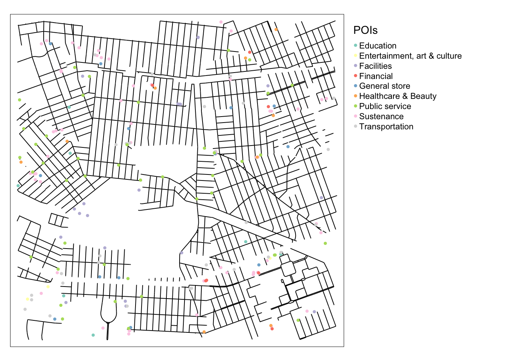
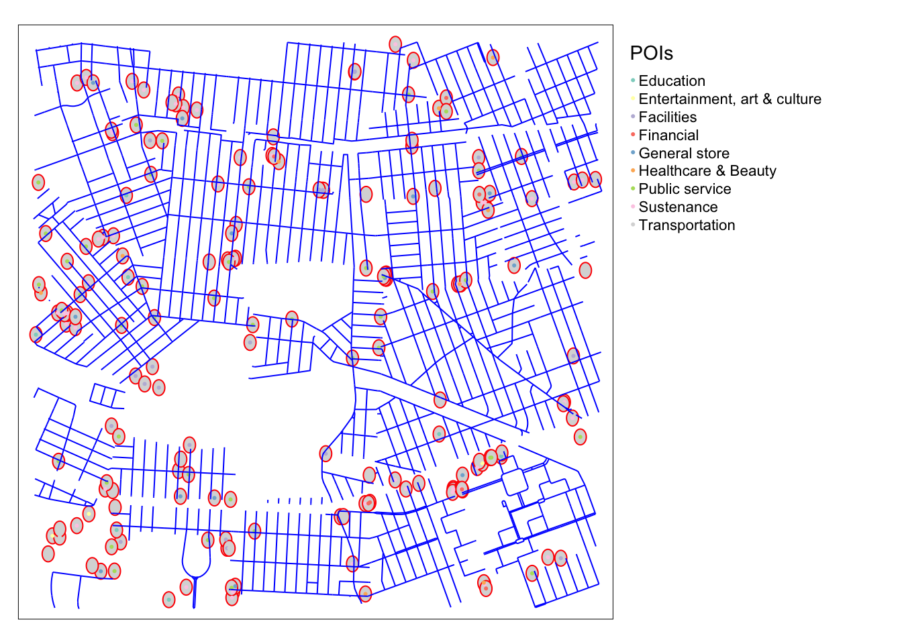
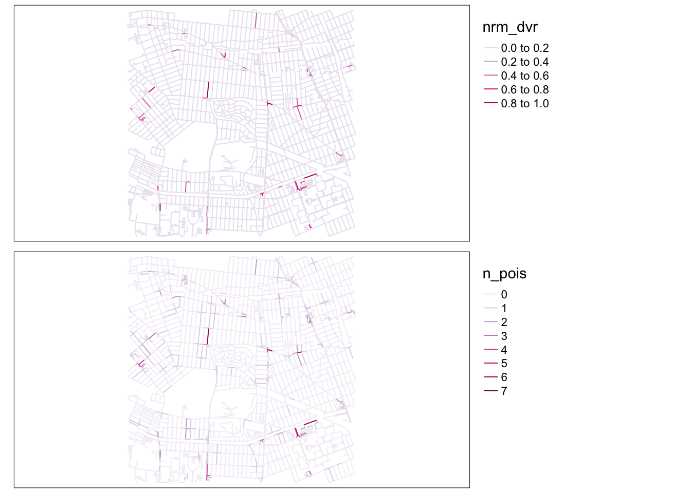

Last updated: 2021-05-10
Checks: 7 0
Knit directory: draw-15minsCity-bubbles/
This reproducible R Markdown analysis was created with workflowr (version 1.6.2). The Checks tab describes the reproducibility checks that were applied when the results were created. The Past versions tab lists the development history.
Great! Since the R Markdown file has been committed to the Git repository, you know the exact version of the code that produced these results.
Great job! The global environment was empty. Objects defined in the global environment can affect the analysis in your R Markdown file in unknown ways. For reproduciblity it’s best to always run the code in an empty environment.
The command set.seed(20210414) was run prior to running the code in the R Markdown file. Setting a seed ensures that any results that rely on randomness, e.g. subsampling or permutations, are reproducible.
Great job! Recording the operating system, R version, and package versions is critical for reproducibility.
Nice! There were no cached chunks for this analysis, so you can be confident that you successfully produced the results during this run.
Great job! Using relative paths to the files within your workflowr project makes it easier to run your code on other machines.
Great! You are using Git for version control. Tracking code development and connecting the code version to the results is critical for reproducibility.
The results in this page were generated with repository version 510c5d2. See the Past versions tab to see a history of the changes made to the R Markdown and HTML files.
Note that you need to be careful to ensure that all relevant files for the analysis have been committed to Git prior to generating the results (you can use wflow_publish or wflow_git_commit). workflowr only checks the R Markdown file, but you know if there are other scripts or data files that it depends on. Below is the status of the Git repository when the results were generated:
Ignored files:
Ignored: .DS_Store
Ignored: .Rhistory
Ignored: .Rproj.user/
Ignored: data/.DS_Store
Ignored: model/.DS_Store
Ignored: model/data/.DS_Store
Untracked files:
Untracked: data/pic/
Unstaged changes:
Modified: data/POIs/poi_points.dbf
Note that any generated files, e.g. HTML, png, CSS, etc., are not included in this status report because it is ok for generated content to have uncommitted changes.
These are the previous versions of the repository in which changes were made to the R Markdown (analysis/002-extract-POIs.Rmd) and HTML (docs/002-extract-POIs.html) files. If you’ve configured a remote Git repository (see ?wflow_git_remote), click on the hyperlinks in the table below to view the files as they were in that past version.
| File | Version | Author | Date | Message |
|---|---|---|---|---|
| Rmd | 4695687 | chenqingqing | 2021-05-10 | update visualization |
| html | 7082957 | chenqingqing | 2021-05-02 | update docs and data |
| Rmd | 322b72a | chenqingqing | 2021-05-02 | add jitter effect |
| html | a44f3ba | chenqingqing | 2021-05-01 | update docs |
| Rmd | 69fa59d | chenqingqing | 2021-05-01 | update plots |
| Rmd | f0a9e2e | chenqingqing | 2021-05-01 | add POIs diversity |
| html | 50aad43 | chenqingqing | 2021-04-15 | add docs |
| Rmd | 2738ed7 | chenqingqing | 2021-04-15 | extract POIs |
##load data
sf_queens_2km <- read_sf(here("data/queens2km_street_networks/edges.shp"))
## only keep residential streets
sf_queens_residential <- sf_queens_2km %>%
filter(highway == "residential") %>%
dplyr::select(osmid, name, length)# head(available_features())
# head(available_tags("amenity"))
# head(available_tags("shop"))
extract_pois <- function(bb, key_nm, value_nm, type){
pois <- opq(bbox = bb) %>%
add_osm_feature(key = key_nm, value = value_nm) %>%
osmdata_sf()
if(key_nm == "amenity"){
pois$osm_points %>%
filter(!is.na(amenity)) %>%
mutate(poi = type) %>%
dplyr::select(osm_id, poi, amenity) %>%
rename(type = amenity)
}else{
pois$osm_points %>%
filter(!is.na(shop)) %>%
mutate(poi = type) %>%
dplyr::select(osm_id, poi, shop) %>%
rename(type = shop)
}
}
## Sustenance
sf_sustenance <- extract_pois(bb = c(-73.82137, 40.73188, -73.77389, 40.76776),
key_nm = "amenity",
value_nm = c("bar", "biergarten", "cafe", "fast_food", "food_court", "pub", "restaurant"),
type = "Sustenance")
## shops - food, beverages
shop_nms <- c("alcohol", "bakery", "beverages", "brewing_supplies", "butcher", "cheese", "chocolate", "coffee", "confectionery", "convenience", "deli", "dairy", "farm", "frozen_food", "greengrocer", "health_food", "ice_cream", "pasta", "seafood", "spices", "tea", "water")
sf_shop_food_beverages <- extract_pois(bb = c(-73.82137, 40.73188, -73.77389, 40.76776),
key_nm = "shop",
value_nm = shop_nms,
type = "Sustenance")
sf_sustenance <- bind_rows(sf_sustenance, sf_shop_food_beverages)## Facilities
sf_facilities <- extract_pois(bb = c(-73.82137, 40.73188, -73.77389, 40.76776),
key_nm = "amenity",
value_nm = c("bbq", "bench", "dog_toilet", "drinking_water", "give_box", "shelter", "shower", "telephone", "toilets", "water_point", "watering_place"),
type = "Facilities")## shops - general store, department store, mall
general_shops <- c("department_store", "general", "kiosk", "mall", "supermarket", "wholesale", "baby_goods", "bag", "boutique", "clothes", "fabric", "fashion_accessories", "jewelry", "leather", "sewing", "shoes", "tailor", "watches", "wool", "charity", "second_hand", "variety_store", "agrarian", "appliance", "bathroom_furnishing", "doityourself", "electrical", "energy", "fireplace", "florist", "garden_centre", "garden_furniture", "gas", "glaziery", "groundskeeping", "hardware", "houseware", "locksmith", "paint", "security", "trade", "antiques", "bed", "candles", "carpet", "curtain", "doors", "flooring", "furniture", "household_linen", "interior_decoration", "kitchen", "lighting", "tiles", "window_blind", "computer", "electronics", "hifi", "mobile_phone", "radiotechnics", "vacuum_cleaner", "anime", "books", "gift", "lottery", "newsagent", "stationery", "ticket", "bookmaker", "cannabis", "copyshop", "dry_cleaning", "e-cigarette", "funeral_directors", "laundry", "money_lender", "party", "pawnbroker", "pet", "pet_grooming", "pest_control", "pyrotechnics", "religion", "storage_rental", "tobacco", "toys", "travel_agency", "vacant", "weapons", "outpost", "user defined")
sf_generalStore <- extract_pois(bb = c(-73.82137, 40.73188, -73.77389, 40.76776),
key_nm = "shop",
value_nm = general_shops,
type = "General store")## Healthcare
sf_healthcare <- extract_pois(bb = c(-73.82137, 40.73188, -73.77389, 40.76776),
key_nm = "amenity",
value_nm = c("baby_hatch", "clinic", "dentist", "doctors", "hospital", "nursing_home", "pharmacy", "social_facility", "veterinary"),
type = "Healthcare & Beauty")
sf_health <- extract_pois(bb = c(-73.82137, 40.73188, -73.77389, 40.76776),
key_nm = "shop",
value_nm = c("beauty", "chemist", "cosmetics", "erotic", "hairdresser", "hairdresser_supply", "hearing_aids", "herbalist", "message", "medical_supply", "nutrition_supplements", "optician", "perfumery", "tattoo"),
type = "Healthcare & Beauty")
sf_healthcare <- bind_rows(sf_healthcare, sf_health)## entertainment, art & culture
sf_entertainment <- extract_pois(bb = c(-73.82137, 40.73188, -73.77389, 40.76776),
key_nm = "amenity",
value_nm = c("arts_centre", "brothel", "casino", "cinema", "community_centre", "conference_centre", "events_venue", "fountain", "gambling", "love_hotel", "nightclub", "planetarium", "public_bookcase", "social_centre", "stripclub", "studio", "swingerclub", "theatre"),
type = "Entertainment, art & culture")## Education
sf_education <- extract_pois(bb = c(-73.82137, 40.73188, -73.77389, 40.76776),
key_nm = "amenity",
value_nm = c("college", "driving_school", "kindergarten", "language_school", "library", "toy_library", "music_school", "school", "university"),
type = "Education")## Transportation
sf_transportation <- extract_pois(bb = c(-73.82137, 40.73188, -73.77389, 40.76776),
key_nm = "amenity",
value_nm = c("bicycle_parking", "bicycle_repair_station", "bicycle_rental", "boat_rental", "boat_sharing", "bus_station", "car_rental", "car_sharing", "car_wash", "vehicle_inspection", "charging_station", "ferry_terminal", "fuel", "grit_bin", "motorcycle_parking", "parking", "parking_entrance", "parking_space", "taxi"),
type = "Transportation")## Financial
sf_financial <- extract_pois(bb = c(-73.82137, 40.73188, -73.77389, 40.76776),
key_nm = "amenity",
value_nm = c("atm", "bank", "bureau_de_change"),
type = "Financial")## public service
sf_publicService <- extract_pois(bb = c(-73.82137, 40.73188, -73.77389, 40.76776),
key_nm = "amenity",
value_nm = c("courthouse", "embassy", "fire_station", "police", "post_box", "post_office", "prison", "ranger_station", "townhall"),
type = "Public service")full_pois <- bind_rows(sf_sustenance, sf_facilities, sf_generalStore, sf_healthcare, sf_entertainment, sf_education, sf_transportation, sf_financial, sf_publicService) %>%
rename(POIs = poi)
write_sf(full_pois, here::here("data/POIs/poi_points.shp"))
full_pois %>%
st_set_geometry(NULL) %>%
group_by(POIs) %>%
summarise(Count = n()) %>%
ungroup() %>%
mutate(POIs = stringr::str_to_title(POIs)) %>%
gt::gt() | POIs | Count |
|---|---|
| Education | 7 |
| Entertainment, Art & Culture | 3 |
| Facilities | 20 |
| Financial | 7 |
| General Store | 13 |
| Healthcare & Beauty | 9 |
| Public Service | 43 |
| Sustenance | 60 |
| Transportation | 28 |
full_pois %>%
st_set_geometry(NULL) %>%
mutate(type = gsub("_", " ", type),
type = stringr::str_to_title(type),
POIs = stringr::str_to_title(POIs)) %>%
group_by(POIs, type) %>%
summarise(Count = n()) %>%
gt::gt() %>%
gt::cols_label(type = "Type of POIs")| Type of POIs | Count |
|---|---|
| Education | |
| Library | 2 |
| School | 5 |
| Entertainment, Art & Culture | |
| Arts Centre | 1 |
| Cinema | 1 |
| Theatre | 1 |
| Facilities | |
| Bench | 2 |
| Drinking Water | 16 |
| Toilets | 2 |
| Financial | |
| Atm | 1 |
| Bank | 6 |
| General Store | |
| Books | 1 |
| Department Store | 1 |
| Funeral Directors | 2 |
| Hifi | 1 |
| Pet | 1 |
| Shoes | 1 |
| Supermarket | 5 |
| Vacant | 1 |
| Healthcare & Beauty | |
| Beauty | 1 |
| Chemist | 1 |
| Cosmetics | 1 |
| Dentist | 4 |
| Doctors | 1 |
| Hospital | 1 |
| Public Service | |
| Fire Station | 2 |
| Post Box | 40 |
| Post Office | 1 |
| Sustenance | |
| Alcohol | 1 |
| Bakery | 1 |
| Bar | 1 |
| Butcher | 1 |
| Cafe | 2 |
| Convenience | 4 |
| Deli | 2 |
| Farm | 1 |
| Fast Food | 8 |
| Food Court | 1 |
| Frozen Food | 1 |
| Greengrocer | 1 |
| Restaurant | 36 |
| Transportation | |
| Bicycle Parking | 16 |
| Car Wash | 1 |
| Charging Station | 2 |
| Fuel | 6 |
| Parking | 3 |
sf_queens_2km_sub <- sf_queens_2km %>%
filter(highway %in% c("primary", "primary_link", "tertiary", "tertiary_link", "secondary", "secondary_link", "residential", "service"))
# tm_shape(sf_queens_residential) +
# tm_shape(sf_queens_2km_sub) +
# tm_lines() +
# tm_shape(full_pois) +
# tm_dots(col = "POIs", size = 0.05, jitter = 0.05) +
# tm_layout(legend.outside = T)
ggplot() +
geom_sf(data = sf_queens_2km_sub, color = "black", fill = "white") +
geom_sf(data = full_pois, aes(color = POIs, size = 0.75)) +
geom_jitter() +
scale_size_identity() +
coord_sf(datum = NA) +
annotation_north_arrow(location = "bl",
which_north = "true",
height = unit(0.7, "cm"),
width = unit(0.4, "cm"),
pad_x = unit(0.03, "in"),
pad_y = unit(0.3, "in"),
style = north_arrow_fancy_orienteering) +
annotation_scale(location = "bl", width_hint = 0.4, height = unit(0.07, "cm")) +
theme_minimal() 
# https://epsg.io/3970
# create 5m buffer
poi_buffers50m <- full_pois %>%
st_transform(crs = 3970) %>%
st_buffer(., dist = 30)
# tm_shape(poi_buffers50m) +
# tm_polygons(border.col = "red") +
# tm_shape(full_pois) +
# tm_dots(col = "POIs") +
# tm_shape(sf_queens_2km_sub) +
# tm_lines(col = "black") +
# tm_layout(legend.outside = T)
ggplot() +
geom_sf(data = sf_queens_2km_sub, color = "black", fill = "white") +
geom_sf(data = poi_buffers50m, color = "red", alpha = 0) +
geom_sf(data = full_pois, aes(color = POIs, size = 0.75)) +
geom_jitter() +
scale_size_identity() +
coord_sf(datum = NA) +
annotation_north_arrow(location = "bl",
which_north = "true",
height = unit(0.7, "cm"),
width = unit(0.4, "cm"),
pad_x = unit(0.03, "in"),
pad_y = unit(0.3, "in"),
style = north_arrow_fancy_orienteering) +
annotation_scale(location = "bl", width_hint = 0.4, height = unit(0.07, "cm")) +
theme_minimal() 
if(file.exists(here::here("data/streets_with_POIs/streets_with_POIs_queens2km.shp"))){
streets_with_POIs_queens2km <- read_sf(here::here("data/streets_with_POIs/streets_with_POIs_queens2km.shp"))
}else{
#intersect street with POIs
streets_with_POIs <- sf_queens_2km_sub %>%
st_transform(crs = 3970) %>%
rownames_to_column(var = "id") %>%
mutate(id = factor(id, levels = id)) %>%
st_join(., poi_buffers50m) %>%
mutate(POIs = if_else(is.na(POIs), 0, 1))
#calculate diversity based on shannon diversity
div_df <- streets_with_POIs %>%
st_set_geometry(NULL) %>%
dplyr::select(id, POIs, type) %>%
filter(POIs != 0) %>%
group_by(id, type) %>%
dplyr::summarise(n = n()) %>%
ungroup() %>%
spread(., key = "type", value = "n") %>%
replace(., is.na(.), 0)
div_id <- div_df$id
div_shannon <- div_df %>%
column_to_rownames(var = "id") %>%
diversity(index = "shannon") %>%
as_tibble()
div_POIs <- tibble(id = id) %>%
bind_cols(div_shannon) %>%
rename(diversity = value)
# frequency of POIs
freq_POIs <- streets_with_POIs %>%
group_by(id) %>%
dplyr::summarise(n_pois = sum(POIs) %>% as.integer(),
n_type = n_distinct(type)) %>%
mutate(n_type = if_else(n_pois == 0, 0, as.numeric(n_type)))
# join diversity to street sf object
streets_with_POIs_queens2km <- freq_POIs %>%
left_join(., div_POIs, by = c("id" = "id")) %>%
mutate(diversity = case_when(
diversity >= 0 ~ diversity + 0.1,
TRUE ~ 0
)) %>%
mutate(norm_diversity = (diversity - min(diversity))/(max(diversity) - min(diversity)),
norm_diversity = round(norm_diversity, 2)) %>%
left_join(., sf_queens_2km_sub %>% st_set_geometry(NULL) %>% rownames_to_column(var = "id") %>%
dplyr::select(id, osmid, name, highway, length)) %>%
dplyr::select(id, osmid, name, highway, length, n_pois, n_type, diversity, norm_diversity)
# save to files
write_sf(streets_with_POIs_queens2km %>% st_transform(crs = 4326), here::here("data/streets_with_POIs/streets_with_POIs_queens2km.shp"))
}t1 <- tm_shape(streets_with_POIs_queens2km %>% rename(Norm.Div = nrm_dvr)) +
tm_lines(col = "Norm.Div",
palette = "PuRd",
style = "fixed",
breaks = c(0, 0.05, 0.1, 0.3, 0.5, 0.7, 0.9, 1.0),
labels = c("Low", "", "", "Medium", "", "", "High"),
n = 7
) +
tm_layout(legend.outside = T,
frame = F)
t2 <- tm_shape(streets_with_POIs_queens2km %>% rename(Count.POIs = n_pois)) +
tm_lines(col = "Count.POIs",
palette = "PuRd",
style = "fixed",
breaks = c(0, 1, 2, 3, 4, 5, 6, 7),
labels = c("Low", "", "", "Medium", "", "", "High"),
n = 7) +
tm_layout(legend.outside = T,
frame = F)
tmap_arrange(t1, t2, ncol = 1)
| Version | Author | Date |
|---|---|---|
| a44f3ba | chenqingqing | 2021-05-01 |
sessionInfo()R version 4.0.4 (2021-02-15)
Platform: x86_64-apple-darwin17.0 (64-bit)
Running under: macOS Big Sur 10.16
Matrix products: default
BLAS: /Library/Frameworks/R.framework/Versions/4.0/Resources/lib/libRblas.dylib
LAPACK: /Library/Frameworks/R.framework/Versions/4.0/Resources/lib/libRlapack.dylib
locale:
[1] en_US.UTF-8/en_US.UTF-8/en_US.UTF-8/C/en_US.UTF-8/en_US.UTF-8
attached base packages:
[1] stats graphics grDevices utils datasets methods base
other attached packages:
[1] ggspatial_1.1.5 vegan_2.5-7 lattice_0.20-41 permute_0.9-5
[5] osmdata_0.1.4 tmap_3.3-1 sf_0.9-7 forcats_0.5.1
[9] stringr_1.4.0 dplyr_1.0.5 purrr_0.3.4 readr_1.4.0
[13] tidyr_1.1.3 tibble_3.1.0 ggplot2_3.3.3 tidyverse_1.3.0
[17] here_1.0.1
loaded via a namespace (and not attached):
[1] nlme_3.1-152 fs_1.5.0 lubridate_1.7.10 RColorBrewer_1.1-2
[5] httr_1.4.2 rprojroot_2.0.2 tools_4.0.4 backports_1.2.1
[9] bslib_0.2.4 utf8_1.1.4 R6_2.5.0 KernSmooth_2.23-18
[13] mgcv_1.8-33 DBI_1.1.1 colorspace_2.0-0 raster_3.4-5
[17] sp_1.4-5 withr_2.4.1 tidyselect_1.1.0 leaflet_2.0.4.1
[21] curl_4.3 compiler_4.0.4 git2r_0.28.0 leafem_0.1.3
[25] cli_2.3.1 rvest_0.3.6 gt_0.2.2 xml2_1.3.2
[29] sass_0.3.1 checkmate_2.0.0 scales_1.1.1 classInt_0.4-3
[33] digest_0.6.27 rmarkdown_2.7 base64enc_0.1-3 dichromat_2.0-0
[37] pkgconfig_2.0.3 htmltools_0.5.1.1 highr_0.8 dbplyr_2.1.0
[41] htmlwidgets_1.5.3 rlang_0.4.10 readxl_1.3.1 rstudioapi_0.13
[45] farver_2.1.0 jquerylib_0.1.3 generics_0.1.0 jsonlite_1.7.2
[49] crosstalk_1.1.1 magrittr_2.0.1 Matrix_1.3-2 Rcpp_1.0.6
[53] munsell_0.5.0 fansi_0.4.2 abind_1.4-5 lifecycle_1.0.0
[57] stringi_1.5.3 leafsync_0.1.0 whisker_0.4 yaml_2.2.1
[61] MASS_7.3-53 tmaptools_3.1-1 grid_4.0.4 parallel_4.0.4
[65] promises_1.2.0.1 crayon_1.4.1 splines_4.0.4 stars_0.5-1
[69] haven_2.3.1 hms_1.0.0 knitr_1.31 pillar_1.5.1
[73] codetools_0.2-18 reprex_1.0.0 XML_3.99-0.5 glue_1.4.2
[77] evaluate_0.14 modelr_0.1.8 vctrs_0.3.6 png_0.1-7
[81] httpuv_1.5.5 cellranger_1.1.0 gtable_0.3.0 assertthat_0.2.1
[85] xfun_0.21 lwgeom_0.2-5 broom_0.7.5 e1071_1.7-4
[89] later_1.1.0.1 class_7.3-18 viridisLite_0.3.0 cluster_2.1.0
[93] workflowr_1.6.2 units_0.6-7 ellipsis_0.3.1